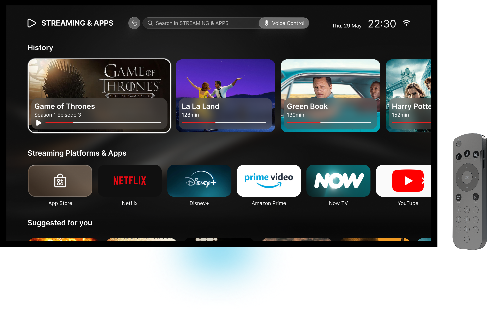
Aurion TV 是一款亲切易用的智能电视，融合优雅设计与直观交互，让用户以自己的节奏探索内容，同时始终保持清晰与掌控感。
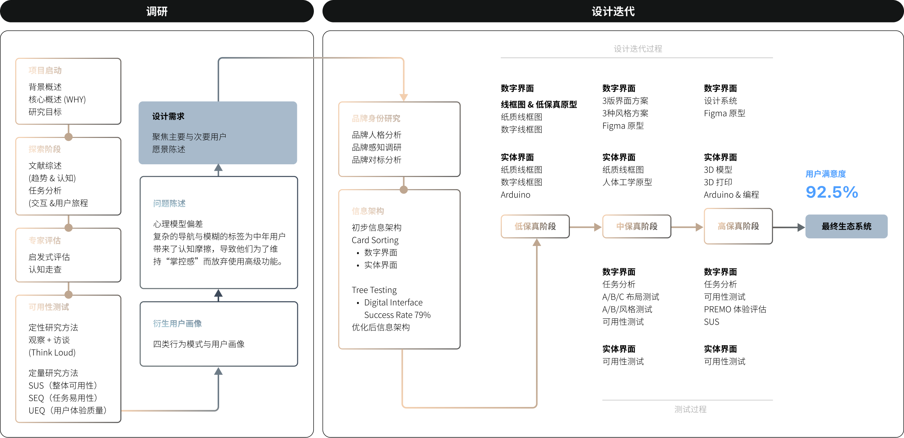
研究方法
文献综述
综合6 项研究与行业报告显示：40% 的 55+ 用户已偏好数字平台，但仅 24% 每日使用联网设备观看电视
结论：接受度提升，但复杂界面与操作负担仍阻碍持续使用，设计重点应从“增加功能”转向“降低使用复杂度”
任务分析
拆解 5 个高频 Smart TV 使用任务，梳理关键步骤与子任务层级
结论：多项基础操作仍包含冗余步骤与层级跳转，增加了中老年用户的理解和操作负担
问卷及用户访谈
11 名目标用户参与测试，完成 7 个核心 Smart TV 任务，并结合行为观察与访谈收集真实使用反馈
结论：用户并不抗拒 Smart TV，而是在脱离熟悉的观看路径后，容易因入口隐蔽、命名不清和反馈不足而失去操作方向
SEQ
11 名用户完成 7 个核心任务并进行 SEQ 评分。投屏完成率仅 27%，平均 SEQ 为 3.11；语言选择虽有 91% 完成率，却产生了最高的 15 次操作错误。
结论：任务“能完成”并不代表体验顺畅。语言选择暴露出高错误率与较高操作负担，而投屏则同时表现出低完成率与低易用性，是最明显的关键障碍。
SUS
11 名用户完成 SUS 评估，得分跨度为 12.5–97.5；剔除最高与最低分后，平均得分为 66.67。
结论：整体可用性仅处于中等水平，且同一系统下用户评分差异明显，说明 Smart TV 的易用性缺乏稳定性，对用户经验与熟悉程度依赖较高。
UEQ
11 名用户从 6 个维度完成 UEQ 评估，其中“可靠性 / 掌控感（Dependability）”得分最低，接近 0；“刺激性（Stimulation）”同样落入较差区间，其余维度整体低于平均水平。
结论：系统在掌控感与使用吸引力上表现最弱，说明 Smart TV 不仅需要降低操作难度，还需提升反馈一致性、可预期性与用户信心。
认知走查
4 名评估者对 2 套 Smart TV 系统的 7 个核心任务逐步走查，识别出 4 个反复出现的关键失败节点，集中在语言设置、蓝牙连接、Wi-Fi 配置与手机投屏。
结论：关键任务的操作逻辑频繁偏离用户预期：入口隐藏、层级过深、图标与按键含义不明确，选中状态和连接反馈也不够清晰，使用户容易在任务中途失去方向。
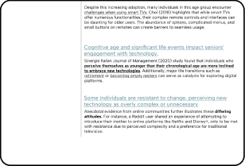
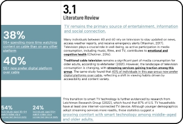
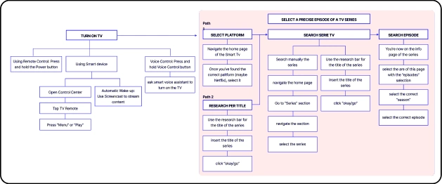
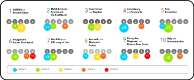
专家走查
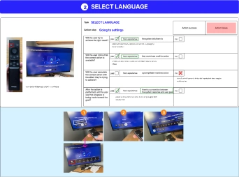
启发式评估
4 名评估者基于 Nielsen’s 10 Heuristics 评估 4 台 Smart TV，其中 6 项原则出现严重问题（≥3级），其中 “Recognition Rather Than Recall” 与 “Recognize, Diagnose, and Recover from Errors” 问题最突出。
结论：问题主要集中在操作逻辑与用户预期不一致、过度依赖记忆，以及错误恢复与帮助不足；其中“识别而非记忆”和“错误恢复”问题最为严重。
定性分析
定量分析
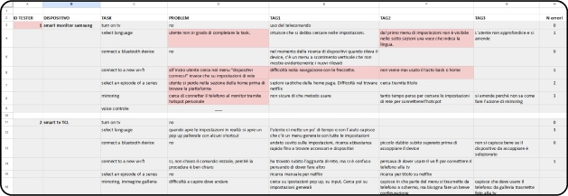
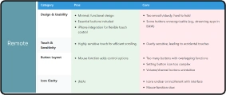
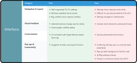
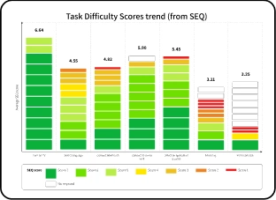
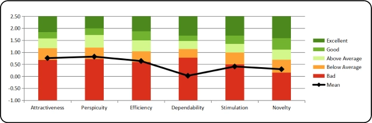
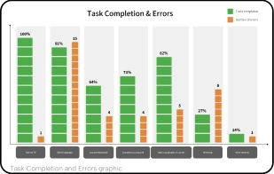
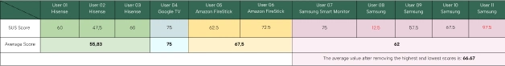
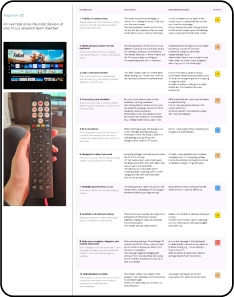
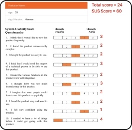
06
统一术语与高识别度图标
增强熟悉感，减少理解歧义
02
避免认知过载， 辅助决策
减少每个界面中可见元素的数量
03
优先呈现核心与 高频功能
减少用户在多层级菜单中的探索成本
04
提升用户的掌控感 与信息感知
通过交互前的视觉提示预判用户行为，使用户更有掌控感与理解感
07
内容推荐机制
在浏览过程中降低用户的操作与决策成本
05
明确当前系统位置
避免用户在系统中迷失或产生困惑
01
简化遥控器布局
通过熟悉且核心的按键分组，降低学习成本
设计宗旨：设计旨在以清晰且熟悉的交互与低干扰的引导方式，减少固执型与被动型用户对新技术的抗拒，并逐步推动其向技术探索型行为转变。
08
低干扰的细微引导
通过情境化的微提示提供引导，同时减少界面冗余信息，保持简洁
设计需求
目标用户群体

聚焦40 - 60岁独自生活的用户群体，并从用户测试中归纳出4类用户在使用智能电视时的典型行为模式，基于综合分析我们共识别出4类用户画像，并重点聚焦于2类主要用户与次要用户： 固执型用户（The Stubborn） 被动型用户（The Lazy） 技术探索者（The Tech Curious） 专家型用户（The Expert）
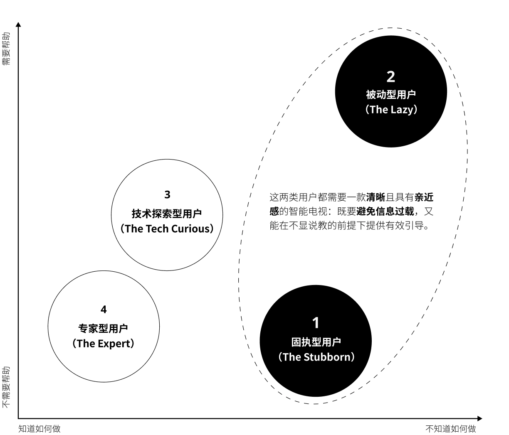
简洁 · 智能 · 易用
AURION TV 首页强调清晰结构与低学习成本，在保证核心娱乐功能即时可用的同时，以渐进方式引入智能功能。常驻导航栏使高频应用始终可达，提升整体使用流畅性与掌控感。

信息清晰明了 · 导航从容自信
设置与连接界面旨在为用户提供清晰的操作感和掌控自信。极简且纯净的结构让用户能够快速定位所需内容；同时，导航预览功能在进入每个板块前即提供即时背景与说明。直观的交互按键辅以均衡的图文配比，使各项功能不仅清晰可见且易于理解。通过减少隐蔽的层级，系统控制变得更加简单易行，导航体验也更加顺畅。
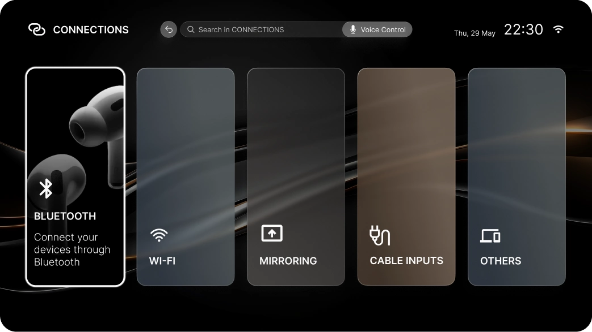
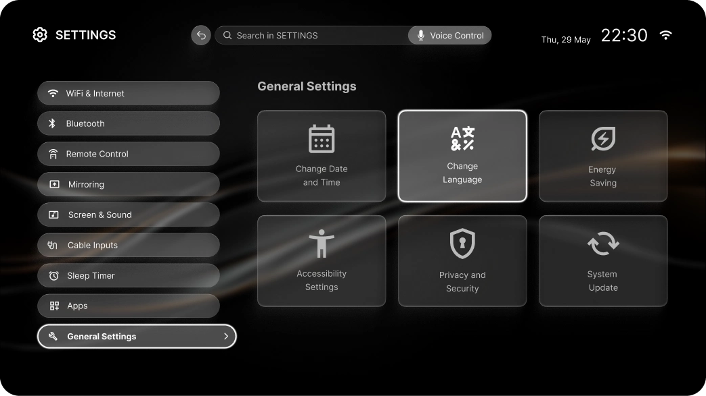
一致 · 清晰 · 以用户为中心
清晰、行动导向的语言与一致的视觉线索，确保各项功能一目了然。通过通用的色彩逻辑，帮助用户在不同页面间快速识别相关功能，从而降低认知负担并强化心理模型。灵活的选项配置能够适配不同的设备及使用场景，确保为各类用户提供直观顺畅的交互体验。
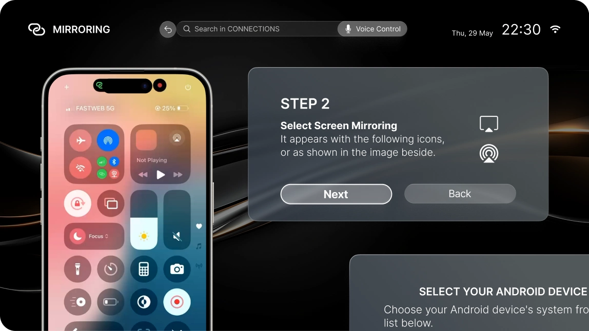
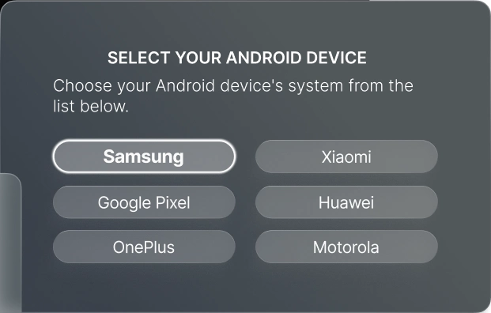
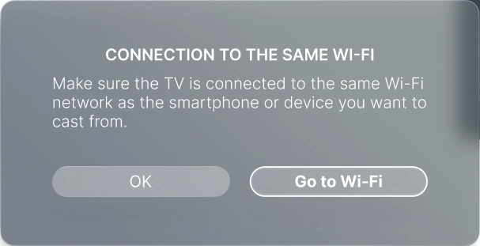
延续习惯 · 现代化交互
这款遥控器在传统习惯与现代交互之间找到了完美的平衡。用户预期的传统元素被完整保留在熟悉的位置；与此同时，通过加入语音控制和侧边音量键等精致的改良设计，为电视交互带来了更快捷、更自然的方式。